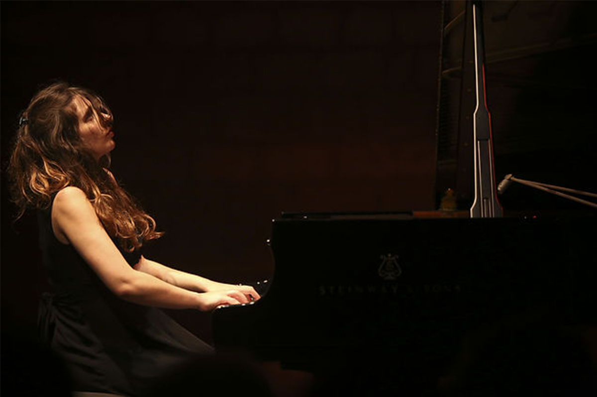
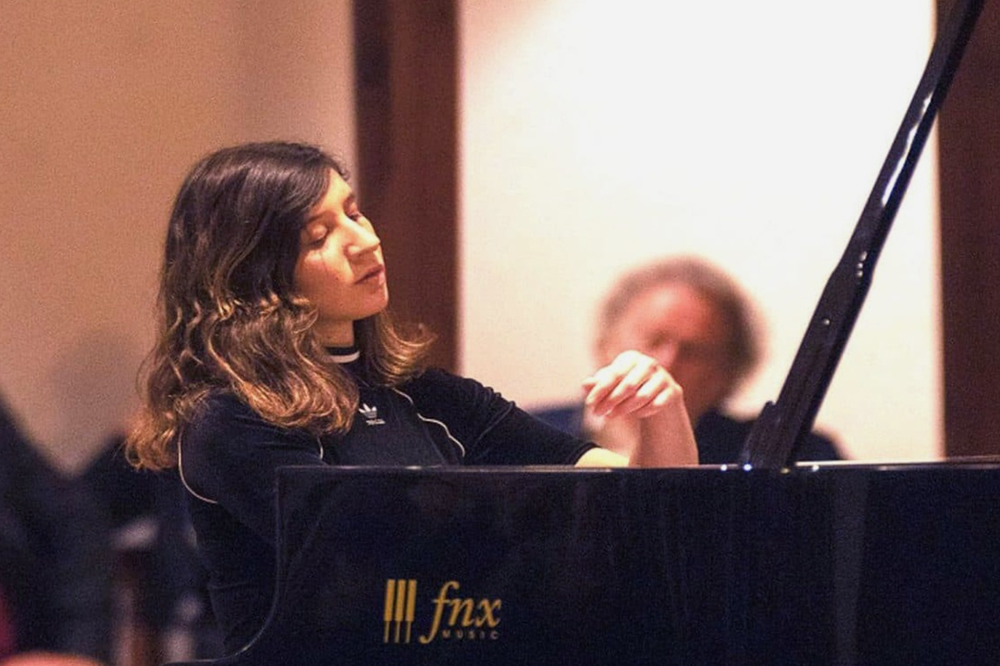

Эвелина БЕРЕЗОВСКАЯ
London. United Kingdom
Эвелина Березовская родилась в Москве в 1991 году, в пять лет начала играть на фортепиано. Уже через два года она поступила в Purcell School of Music, затем продолжила обучение у Хэмиша Милна в Королевской академии музыки в Лондоне, у Элисо Вирсаладзе в Италии и у Рены Шерешевской в Париже. Её первое выступление состоялось в 7 лет. С тех пор пианистка выступала во многих престижных концертных залах Англии, Германии, Бельгии, Голландии, Франции, Норвегии, США, России и Японии, включая исполнение сольного концерта на знаменитом музыкальном фестивале Ла-Рок-д'Антерон.
В 2012 году Эвелина Березовская завоевала I премию на Международном конкурсе пианистов в Ланьи-сюр-Марн (Франция), также выиграв Приз зрительских симпатий, Премию мэра и Премию студентов Парижской консерватории. Эта победа принесла ей регулярные приглашения на Radio France.
Эвелина Березовская также выступает с известными оркестровыми коллективами, в числе которых: London Musical Arts Orchestra, Enschede Symphony Orchestra, Hulencourt Soloists Chamber Orchestra, Tokyo Mozart Players, Musica Viva, Таиландский филармонический оркестр, North Czech Philharmonic, и Латвийский национальный симфонический оркестр.